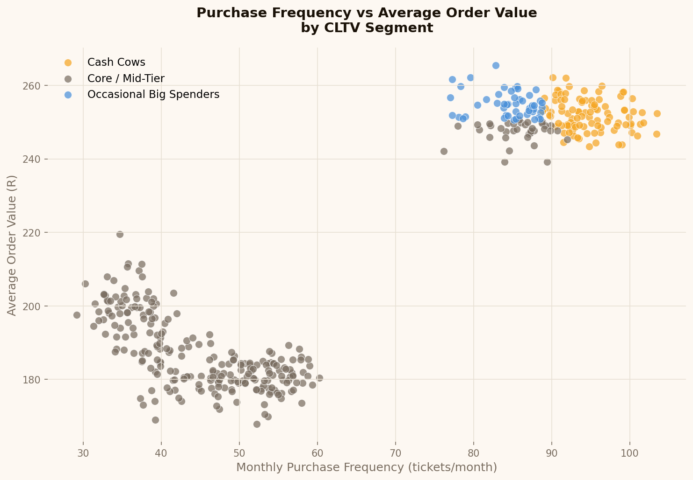
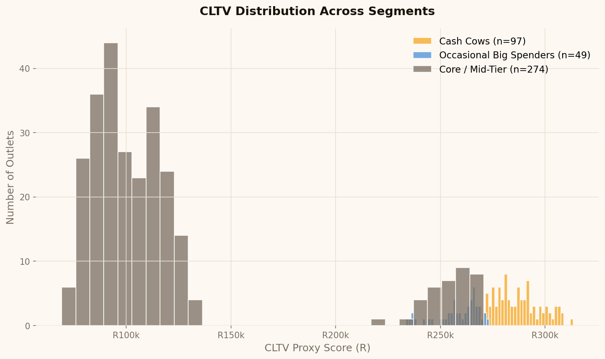
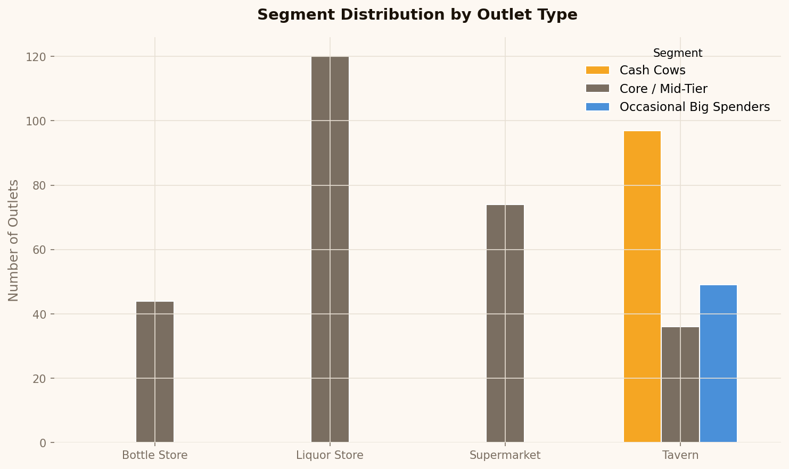
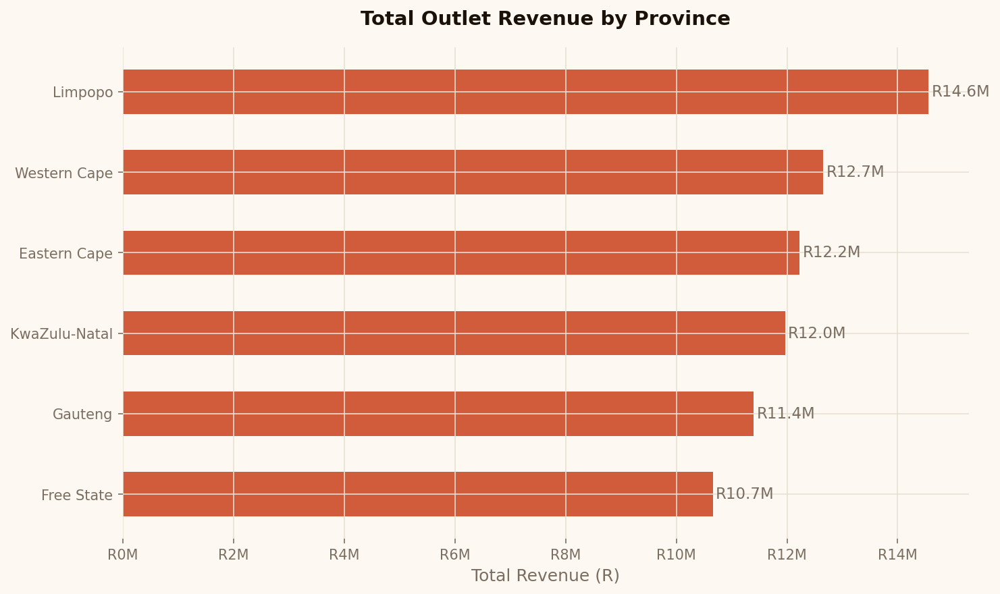
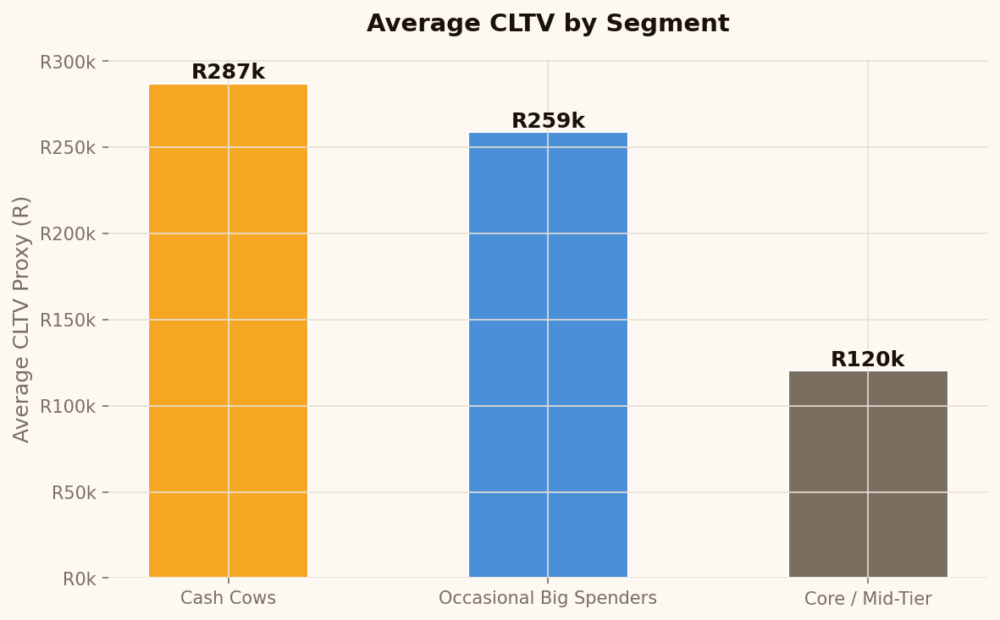

A self-contained project site for the alcohol-retail CLTV portfolio piece. This page is designed to open cleanly in any browser and present the core story, findings, and chart outputs without any build step.
Instead of treating every outlet as equally valuable, the project identifies where long-term commercial value lives and translates that into practical CRM and field-sales action.
Use the filter below to focus the segment cards and the figure gallery on the audience that matters for the conversation you want to have.
These images are shipped inside docs/site/, so the project stays portable and doesn’t rely on assets outside the published GitHub Pages folder.





The workflow was designed around commercial usability. Every modeling step needed to land cleanly in a sales, CRM, or leadership conversation.
The value is not only in the model output. It is in the shared language and repeatable decision-making the model enables.
This project site is intentionally lightweight and resilient so the case study remains viewable as a static GitHub Pages page without any build tooling.